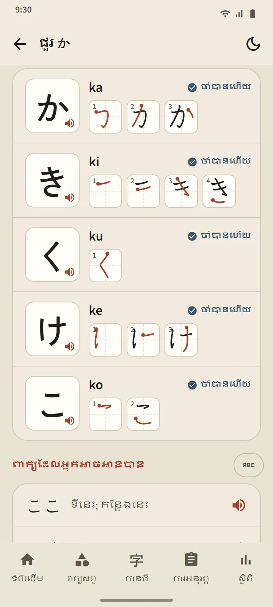
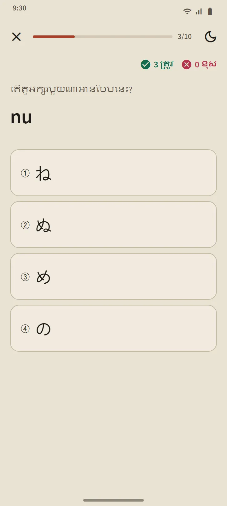

តារាងដែលជាបញ្ជីមេរៀនផង
ទំព័រហ៊ីរ៉ាហ្គាណា និងកាតាកាណាបើកពីផ្នែក «មូលដ្ឋានភាសាជប៉ុន» នៃទំព័រដើម។ កាតសង្ខេបនៅខាងលើរាប់តួអក្សរដែលអ្នកចាំបានហើយ ចំណែកតារាងខាងក្រោមចែកជាបីក្រុម៖ មូលដ្ឋាន (46 តួអក្សរ) មានសញ្ញា (dakuten និង handakuten) និង អក្សរផ្សំ (きゃ, しゅ, ちょ ជាដើម)។ ប្រអប់ពណ៌ពេញមានន័យថា «ចាំបានហើយ» ចំណែកប្រអប់ដែលមានតែបន្ទាត់គែមមានន័យថាកំពុងរៀន។
មួយមេរៀនសម្រាប់មួយជួរ
ជួរនីមួយៗនៃតារាងគឺជាមេរៀនមួយ៖ ប្រអប់តួអក្សរដែលអ្នកចុចដើម្បីស្តាប់ រ៉ូម៉ាជី សញ្ញាចាំបានហើយ លំដាប់ឆូតរបស់តួអក្សរនីមួយៗ និង «ពាក្យដែលអ្នកអាចអានបាន»៖ ពាក្យពិតៗពីវចនានុក្រម ដែលផ្សំឡើងតែពីតួអក្សរដែលបានរៀនរហូតដល់ជួរនោះ ដោយរ៉ូម៉ាជីលាក់នៅពីក្រោយប៊ូតុងមួយ ដើម្បីឱ្យអ្នកសាកអានជាមុនសិន។ ប៊ូតុង «សំណួរសម្រាប់ជួរនេះ» បិទបញ្ចប់មេរៀន។

ច្បាប់អាន
ក្រុមចុងក្រោយនៃតារាងនីមួយៗពន្យល់ពីច្បាប់ដែលអ្នកទើបរៀនច្រើនតែច្រឡំ៖ っ តូច និងសំឡេងវែងក្នុងហ៊ីរ៉ាហ្គាណា ហើយសញ្ញាសំឡេងវែង ー, ッ តូច និងបន្សំពាក្យកម្ចី (ファ, ティ, ウィ) ក្នុងកាតាកាណា។ ច្បាប់នីមួយៗមានពាក្យឧទាហរណ៍ដែលអ្នកអាចអានបាន។
សំណួរដប់សំណួរ គ្មានការកំណត់ពេលឡើងវិញ
សំណួរកាណាប្រើសំណួរបីប្រភេទ៖ ពីតួអក្សរទៅរ៉ូម៉ាជី ពីរ៉ូម៉ាជីទៅតួអក្សរ និងពីសំឡេងទៅតួអក្សរ។ តួអក្សរមួយក្លាយជា ចាំបានហើយ បន្ទាប់ពីឆ្លើយត្រូវបីដងជាប់គ្នា ហើយត្រឡប់ទៅ «កំពុងរៀន» វិញពេលឆ្លើយខុស។ ខុសពីពាក្យ និងកានជី តួអក្សរមិនត្រូវបានកំណត់ពេលឡើងវិញទេ៖ ពេលអ្នកអានបានទាំងអស់ តារាងក៏ចប់។ សេចក្ដីសង្ខេបនៃសំណួរបង្ហាញពិន្ទុរបស់អ្នក តួអក្សរដែលទើបចាំបាន និងតួអក្សរដែលអ្នកឆ្លើយខុស។

ចាប់ផ្តើមពីទីនេះ
ពេលអ្នកបើកកម្មវិធីលើកដំបូង វាសួរថាតើអ្នកចាប់ផ្ដើមពីសូន្យ ឬអាចអានហ៊ីរ៉ាហ្គាណាបានហើយ។ អ្នកចាប់ផ្ដើមពីសូន្យនឹងទទួលបាន «ស្គាល់ ហ៊ីរ៉ាហ្គាណា» ជាជំហានដំបូងនៅលើទំព័រដើម បន្ទាប់មក 20 ពាក្យដំបូង មេរៀនវេយ្យាករណ៍ដំបូង កានជីដំបូង និងការប្រឡងសាកល្បងដំបូង។